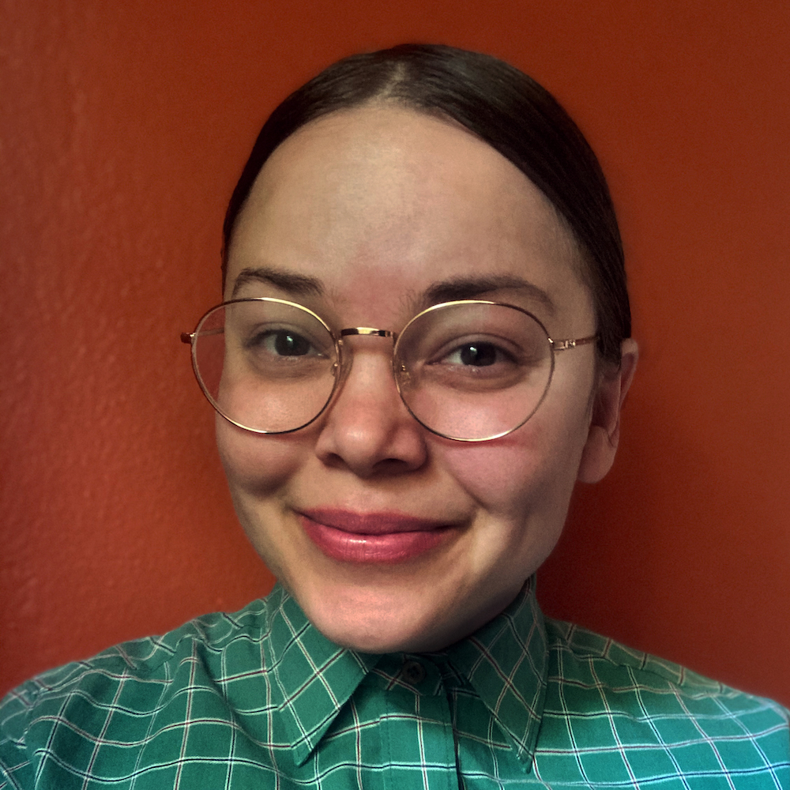

Hello, World! I'm E. Brink!
Currently a student in the Web Development program at Seattle Central Community College. I am interested in both front-end and back-end web development. I've harbored a few passions that inform these interests. Lifelong hobbies like photography, design, and experimenting with different mediums in art motivate my interest in front-end development while my infatuation with logic, puzzles, mathematics, data science, systems theory and statistics draw me to back-end development.
Previously I spent over 15 years working various positions within the restaurant industry, mostly in the front of the house as a bartender. My love of people, food and flavors kept me in restaurants but the pandemic combined with a preexisting urge to return to school brought me to this program.
Beyond school and work and the aforementioned interests I also love music, foraging, growing food, studying foodways, history, social sciences, mycology, promoting community science and my beloved cats.